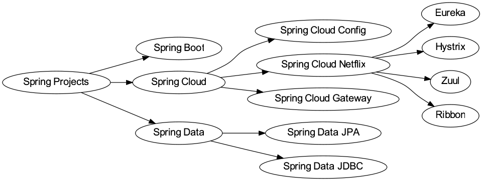

Spring Framework
Table of Contents
- 1. 简介
- 2. Spring 的技术点和优点
- 3. IoC (Inversion of Control)
- 4. 创建 Spring 项目
- 5. 容器 Container 和 Bean
- 6. 资源 Resource
- 7. 面向切面编程 AOP
- 8. 事务
@Transactional - 9. 测试
- 10. Spring MVC
- 11. HTTP 请求映射
- 12. 响应函数参数和返回值
- 13. 跨越 CORS
@CrossOrigin - 14. MVC 配置
@EnableWebMvc - 15. 异步请求
- 16. 远端过程调用
- 17. 客户端请求 RestTemplate
- 18. 发送邮件 Email
- 19. 执行任务和任务调度
- 20. 缓存 Cache
- 21. 参考链接
1 简介
Spring Framework 是一个开源框架，是为了解决企业应用程序开发复杂性而创建的。框 架的主要优势之一就是其分层架构，分层架构允许您选择使用哪一个组件，同时为 J2EE 应用程序开发提供集成的框架。

2 Spring 的技术点和优点
作为 Java Web 开发的龙头老大， Spring 的优点是不需要打广告了，Spring Framework 官网上给出了一下技术要点
- 核心技术：依赖注入，事件，资源，i18n，验证，数据绑定，类型转换，SpEL，AOP
- 测试：模拟对象，TestContext 框架，Spring MVC 测试，WebTestClient
- 数据访问：事务，DAO 支持，JDBC，ORM，编组 XML
- Spring MVC 和 SpringWebFlux Web 框架
- 整合：远程处理，JMS，JCA，JMX，电子邮件，任务，调度，缓存
- 语言：Kotlin，Groovy，动态语言

Spring 的技术点很多，被很多人在工作中应用。这显然是离不开 Spring 团队优秀的设 计，以下是 Spring Framework 的几个比较突出的优点：
- 轻量级：Spring 在大小和透明性方面绝对属于轻量级的，基础版本的 Spring 框架 大约只有 2MB
- 控制反转(IoC)：Spring 使用控制反转技术实现了松耦合。依赖被注入到对象，而不 是创建或寻找依赖对象
- 面向切面编程(AOP)： Spring 支持面向切面编程，同时把应用的业务逻辑与系统的 服务分离开来
- 容器：Spring 包含并管理应用程序对象的配置及生命周期
- MVC 框架：Spring 的 Web 框架是一个设计优良的 Web MVC 框架，很好的取代了一 些 Web 框架
- 事务管理：Spring 对下至本地业务上至全局业务(JAT)提供了统一的事务管理接口
- 异常处理：Spring 提供一个方便的 API 将特定技术的异常(由 JDBC, Hibernate,或 JDO 抛出)转化为一致的、Unchecked 异常
3 IoC (Inversion of Control)
- IoC 也被称为 DI (dependency injection)，是实现 bean 的依赖关系，即在初始化 一个 IoC 容器时，先将其依赖的容器一并初始化，并注入的新的容器中。
- IoC 的好处是可以自动管理 Java 类的示例，提升开发速度
- Spring 管类的实例叫 Bean，Spring 提供了一系列方法来管理 Bean，其中包括：
- BeanFactory Bean 的工厂，ApplicationContext 应用运行的上下文。注意： ApplicationContext 和 BeanFactory 都能实例化 Bean，但是一般尽量使用 ApplicationContext，因为 ApplicationContext 还额外提供了一些其他功能，如： 继承生命周期管理，BeanPostProcessor 自动注册，BeanFactoryPostProcessor 等
- 还有一些 XML 配置类的解析，XML 配置相当于 Spring 构建 Bean 的蓝图，早期 Spring 都用 XML 来配置类，但是由于太复杂，现在已经被 Java 的注解所代替
4 创建 Spring 项目
创建一个 Maven 项目项目工程
mvn archetype:generate \ -DarchetypeArtifactId=maven-archetype-quickstart \ -DinteractiveMode=false -DgroupId=io.github.jeanhwea -DartifactId=mapp
添加 spring-context 的项目依赖到 pom.xml 文件中
<dependency> <groupId>org.springframework</groupId> <artifactId>spring-context</artifactId> <version>5.2.4.RELEASE</version> </dependency>
使用命令行的方式运行主类
mvn exec:java -Dexec.mainClass="io.github.jeanhwea.App" -Dexec.classpathScope=runtime
5 容器 Container 和 Bean
Spring Framework 提供了管理 Bean 的接口 ApplicationContext，也就是说 Bean 的 初始化都是在 ApplicationContext 的实现中处理的，比如： ClassPathXmlApplicationContext 和 FileSystemXmlApplicationContext 都对 ApplicationContext 进行实现，这些 ApplicationContext 是装在 Bean 的，所以被称 为容器。
Bean 其实是一种 Java 的对象，在 Spring 中，Bean 除了普通定义的 Java 代码以外，
还需要一些其他的元信息，例如：定义的 XML，或者 @Component 注解。所以 Spring
中的对象和普通 Java 对象是不一样的，为了体现 Spring 的高贵性，就将 Spring 中
的对象称为 Bean。Bean 的 XML 配置非常恶心且繁琐，不需要记的，用的时候去官网上
查就行。
关于 Bean 的使用需要掌握以下几个要点
- Bean Class, Name, Alias, Constructor arguments, Properties
- Bean Scope: singlenton, prototype, request, session, application, websocket
- Reference:
ref/refid - Collections
<list/>,<set/>,<map/> - Autowiring:
no,byName,byType, constructor *AwareInterfaces: ApplicationContextAware, ResourceLoaderAware, BeanFactoryAware- Bean Definition Inheritance:
<parent/> - Lazy initialization mode
- Initialization method
- Initialization/Destruction method
- Annotation:
@Required,@Autowired
6 资源 Resource
Spring 秉承着一切皆资源，将可以被访问的东西都囊括在 Resource 接口中。并提供了
以下一些实现，用户可以直接通过 URL 来获取: classpath:config.xml,
file:///data/config.xml, http://myservice/logo.png, /path/to/file.txt
- UrlResource
- ClassPathResource
- FileSystemResource
- ServletContextResource
- InputStreamResource
- ByteArrayResource
7 面向切面编程 AOP
AOP 框架创建的对象，代理就是目标对象的加强。Spring 中的 AOP 代理可以使 JDK 动态代理， 也可以是 CGLIB 代理，前者基于接口，后者基于子类。
- Aspect 通常是一个类，里面可以定义切入点和通知
- Join Point 程序执行过程中明确的点，一般是方法的调用
- Advice 在特定的切入点上执行的增强处理
- Pointcut 带有通知的连接点，在程序中主要体现为书写切入点表达式
package com.xyz.someapp; import org.aspectj.lang.annotation.Aspect; import org.aspectj.lang.annotation.Pointcut; @Aspect public class SystemArchitecture { / * A join point is in the web layer if the method is defined * in a type in the com.xyz.someapp.web package or any sub-package * under that. / @Pointcut("within(com.xyz.someapp.web..)") public void inWebLayer() {} / * A join point is in the service layer if the method is defined * in a type in the com.xyz.someapp.service package or any sub-package * under that. / @Pointcut("within(com.xyz.someapp.service..)") public void inServiceLayer() {} / * A join point is in the data access layer if the method is defined * in a type in the com.xyz.someapp.dao package or any sub-package * under that. / @Pointcut("within(com.xyz.someapp.dao..)") public void inDataAccessLayer() {} / * A business service is the execution of any method defined on a service * interface. This definition assumes that interfaces are placed in the * "service" package, and that implementation types are in sub-packages. * * If you group service interfaces by functional area (for example, * in packages com.xyz.someapp.abc.service and com.xyz.someapp.def.service) then * the pointcut expression "execution(* com.xyz.someapp..service..(..))" * could be used instead. * * Alternatively, you can write the expression using the 'bean' * PCD, like so "bean(Service)". (This assumes that you have * named your Spring service beans in a consistent fashion.) */ @Pointcut("execution( com.xyz.someapp..service..(..))") public void businessService() {} /* * A data access operation is the execution of any method defined on a * dao interface. This definition assumes that interfaces are placed in the * "dao" package, and that implementation types are in sub-packages. */ @Pointcut("execution( com.xyz.someapp.dao..(..))") public void dataAccessOperation() {} }
8 事务 @Transactional
8.1 @Transactional
事务不仅仅是 Spring 特有的特性，在数据库并发中普遍存在，具体事务的特性我在
Oracle 中事务一节中有详细地讨论，这里着重记录 Spring 中 @Transactional 标注的使
用
在 Spring 中，事务使用操作的相关讨论出现在 Data Access 一节中，
@Transactional 开启一个事务，例如下面的 FooService 开启了事务管理，虽然
Spring 也支持 XML 方式配置事务，但是比较麻烦，尽量避免使用
@Transactional public class DefaultFooService implements FooService { Foo getFoo(String fooName) { /* ... */ } Foo getFoo(String fooName, String barName) { /* ... */ } void insertFoo(Foo foo) { /* ... */ } void updateFoo(Foo foo) { /* ... */ } }
事务显然有很多属性可以配置，例如：是否只读，是否传播，隔离级别，超时的时长， 以及为何中异常回滚，因为属性多，所以需移步官网文档 Transactional Settings
@Transactional(readOnly = true) public class DefaultFooService implements FooService { public Foo getFoo(String fooName) { /* ... */ } // these settings have precedence for this method @Transactional(readOnly = false, propagation = Propagation.REQUIRES_NEW) public void updateFoo(Foo foo) { /* ... */ } }
在 Spring 中，事务包含一个传播方式，大体上有如下几种：
PROPAGATION_REQUIRED所有方法串在一个事务中执行PROPAGATION_REQUIRES_NEW每次进入子方法时，新开一个事务PROPAGATION_NESTED所有方法串在一个事务中，但是进入子方法时记录保存点 (Save Point)
Spring 也支持多事务管理员角色的注解，使用方法参考下面例子
public class TransactionalService { @Transactional("order") public void setSomething(String name) { /* ... */ } @Transactional("account") public void doSomething() { /* ... */ } }
也可以自己定制的方式定义属于业务逻辑的事务管理注解，参考如下的例子
@Target({ElementType.METHOD, ElementType.TYPE}) @Retention(RetentionPolicy.RUNTIME) @Transactional("order") public @interface OrderTx { } @Target({ElementType.METHOD, ElementType.TYPE}) @Retention(RetentionPolicy.RUNTIME) @Transactional("account") public @interface AccountTx { }
public class TransactionalService { @OrderTx public void setSomething(String name) { /* ... */ } @AccountTx public void doSomething() { /* ... */ } }
8.2 TransactionTemplate
Spring 实现了 TransactionTemplate 模版类，也可以很方便的操纵事务相关的业务
public class SimpleService implements Service { // single TransactionTemplate shared amongst all methods in this instance private final TransactionTemplate transactionTemplate; // use constructor-injection to supply the PlatformTransactionManager public SimpleService(PlatformTransactionManager transactionManager) { this.transactionTemplate = new TransactionTemplate(transactionManager); } public Object someServiceMethod() { return transactionTemplate.execute(new TransactionCallback() { // the code in this method executes in a transactional context public Object doInTransaction(TransactionStatus status) { updateOperation1(); return resultOfUpdateOperation2(); } }); } }
9 测试
Spring 框架的一个特色就是提供测试 Spring Testing 的功能，对于日常工作测试，主
要了解 @Transactional, @Rollback 以及 @Commit 这样三个注解功能。Spring
测试时默认开启事务，如果测试中修改或删除了数据，在测试后要求修改回来。
10 Spring MVC
10.1 简介
Spring MVC 是 Spring Web MVC 通用叫法，由于 spring-webmvc 包的缘故，之前才被
称为 Spring Web MVC。 他提供了开发 MVC 页面的框架，它期初是建立在 Servlet API 基
础上。 我一般讲 Spring MVC 项目组织成如下结构：

10.2 核心组件
Spring MVC 是对通用 Servlet 的一个代理，其实现的 DispatcherServlet 提供对请 求预处理的共享算法。WebApplicationContext 是 ApplicationContext 的子类，他除 了继承 Spring 的 IoC 功能以外，提供了许多对 Web 操作的功能。
10.3 Servlet 配置
Spring MVC 提供了配置 Servlet 的方法。实现 WebApplicationinitializer 接口的 类都可以在 Web 应用程序启动时被加载。具体操作如下：
import org.springframework.web.WebApplicationInitializer; public class MyWebApplicationInitializer implements WebApplicationInitializer { @Override public void onStartup(ServletContext container) { XmlWebApplicationContext appContext = new XmlWebApplicationContext(); appContext.setConfigLocation("/WEB-INF/spring/dispatcher-config.xml"); ServletRegistration.Dynamic registration = container.addServlet("dispatcher", new DispatcherServlet(appContext)); registration.setLoadOnStartup(1); registration.addMapping("/"); } }
10.4 控制器
Spring MVC 默认使用 @Controller 来表示控制器，如果后台开发的大部分返回
Json 的话，我们可以使用 @RestController 来注解，他相当于 @Controller 和
@ResponseBody 这两个的组合。
@Controller public class HelloController { @GetMapping("/hello") public String handle(Model model) { model.addAttribute("message", "Hello World!"); return "index"; } }
11 HTTP 请求映射
通常，可以通过二级路由的方法管理控制器类，详见如下例子：
@RestController @RequestMapping("/persons") class PersonController { @GetMapping("/{id}") public Person getPerson(@PathVariable Long id) { /* ... */ } @PostMapping @ResponseStatus(HttpStatus.CREATED) public void add(@RequestBody Person person) { /* ... */ } }
路径参数中包含如下三种通配符：
?匹配一个字符*匹配零个或多个路径中的字符**匹配零个或多个路径
@GetMapping("/owners/{ownerId}/pets/{petId}") public Pet findPet(@PathVariable Long ownerId, @PathVariable Long petId) { /* ... */ } @GetMapping("/pets/{petId}") public Pet findPet(@PathVariable("petId") id) { /* ... */ } @GetMapping("/{name:[a-z-]+}-{version:\\d\\.\\d\\.\\d}{ext:\\.[a-z]+}") public void handle(@PathVariable String version, @PathVariable String ext) { /* ... */ } @GetMapping("/pets/{petId}") // same as @RequestMapping("/pets/{petId}", method=HttpMethod.GET)
匹配 Content-Type 字段的值，将控制器局限到对应的类型的文件处理
@PostMapping(path = "/pets", consumes = "application/json") public void addPet(@RequestBody Pet pet) { /* ... */ } @PostMapping(path = "/pets", consumes = "!text/plain") public void addPet(@RequestBody Pet pet) { /* ... */ }
返回多媒体类型的流，参考 Accept 请求头
@GetMapping(path = "/pets/{petId}", produces = "application/json") @ResponseBody public Pet getPet(@PathVariable String petId) { /* ... */ }
根据请求的添加来部分匹配
@GetMapping(path = "/pets/{petId}", params = "myParam=myValue") public void findPet(@PathVariable String petId) { /* ... */ } @GetMapping(path = "/pets", headers = "myHeader=myValue") public void findPet(@PathVariable String petId) { /* ... */}
还可以通过以下的方式来动态注册请求 URL 到处理方法
@Configuration public class MyConfig { @Autowired public void setHandlerMapping(RequestMappingHandlerMapping mapping, UserHandler handler) throws NoSuchMethodException { RequestMappingInfo info = RequestMappingInfo .paths("/user/{id}").methods(RequestMethod.GET).build(); Method method = UserHandler.class.getMethod("getUser", Long.class); mapping.registerMapping(info, handler, method); } }
12 响应函数参数和返回值
Method Handler 包括方法参数和返回值注解。其中请求的方法输入参数包括：
常用注解 @RequestParam, @RequestHeader, @RequestBody 。还包括一些类
javax.servlet.ServletRequest, javax.servlet.ServletResponse, HttpMethod
返回值也支持好多种注解已经类，列表等： @ResponseBody, HttpEntity<B>
矩阵变量
// GET /pets/42;q=11;r=22 @GetMapping("/pets/{petId}") public void findPet(@PathVariable String petId, @MatrixVariable int q) { // petId == 42 // q == 11 } // GET /owners/42;q=11/pets/21;q=22 @GetMapping("/owners/{ownerId}/pets/{petId}") public void findPet(@MatrixVariable(name="q", pathVar="ownerId") int q1, @MatrixVariable(name="q", pathVar="petId") int q2) { // q1 == 11 // q2 == 22 } // GET /pets/42 @GetMapping("/pets/{petId}") public void findPet(@MatrixVariable(required=false, defaultValue="1") int q) { // q == 1 } // GET /owners/42;q=11;r=12/pets/21;q=22;s=23 @GetMapping("/owners/{ownerId}/pets/{petId}") public void findPet(@MatrixVariable MultiValueMap<String, String> matrixVars, @MatrixVariable(pathVar="petId") MultiValueMap<String, String> petMatrixVars) { // matrixVars: ["q" : [11,22], "r" : 12, "s" : 23] // petMatrixVars: ["q" : 22, "s" : 23] }
请求参数
@Controller @RequestMapping("/pets") public class EditPetForm { @GetMapping public String setupForm(@RequestParam("petId") int petId, Model model) { Pet pet = this.clinic.loadPet(petId); model.addAttribute("pet", pet); return "petForm"; } }
请求头参数
@GetMapping("/demo") public void handle(@RequestHeader("Accept-Encoding") String encoding, @RequestHeader("Keep-Alive") long keepAlive) { }
Cookie 值
@GetMapping("/demo") public void handle(@CookieValue("JSESSIONID") String cookie) { }
上传文件
@Controller public class FileUploadController { @PostMapping("/form") public String handleFormUpload(@RequestParam("name") String name, @RequestParam("file") MultipartFile file) { if (!file.isEmpty()) { byte[] bytes = file.getBytes(); // store the bytes somewhere return "redirect:uploadSuccess"; } return "redirect:uploadFailure"; } }
异常处理
@Controller public class SimpleController { @ExceptionHandler public ResponseEntity<String> handle01(IOException ex) { /* ... */ } @ExceptionHandler({FileSystemException.class, RemoteException.class}) public ResponseEntity<String> handle02(IOException ex) { /* ... */ } @ExceptionHandler({FileSystemException.class, RemoteException.class}) public ResponseEntity<String> handle(Exception ex) { /* ... */ } }
全局控制器异常处理，在 RESTFul API 设计中需要优雅的异常处理方式，Spring 建议
可以通过 @ExceptionHandler 和 ResponseEntity 来将返回消息方法返回体中，并
在 @ControllerAdvice 中集中处理。在定义异常实体类时，可以继承
ResponseEntityExceptionHandler 类。
// Target all Controllers annotated with @RestController @ControllerAdvice(annotations = RestController.class) public class ExampleAdvice1 {} // Target all Controllers within specific packages @ControllerAdvice("org.example.controllers") public class ExampleAdvice2 {} // Target all Controllers assignable to specific classes @ControllerAdvice(assignableTypes = {ControllerInterface.class, AbstractController.class}) public class ExampleAdvice3 {}
13 跨越 CORS @CrossOrigin
CORS 在 MDN 中有详细的介绍，下面只展示 Spring 中如何配置 CORS。允许单个 URL 和处
理函数跨越可以直接使用 @CrossOrigin 来解决
@RestController @RequestMapping("/account") public class AccountController { @CrossOrigin @GetMapping("/{id}") public Account retrieve(@PathVariable Long id) { /* ... */ } @DeleteMapping("/{id}") public void remove(@PathVariable Long id) { /* ... */ } }
允许类跨域将注解写类头上
@CrossOrigin(origins = "https://domain2.com", maxAge = 3600) @RestController @RequestMapping("/account") public class AccountController { @GetMapping("/{id}") public Account retrieve(@PathVariable Long id) { /* ... */ } @DeleteMapping("/{id}") public void remove(@PathVariable Long id) { /* ... */ } }
或者混合注解方法
@CrossOrigin(maxAge = 3600) @RestController @RequestMapping("/account") public class AccountController { @CrossOrigin("https://domain2.com") @GetMapping("/{id}") public Account retrieve(@PathVariable Long id) { /* ... */ } @DeleteMapping("/{id}") public void remove(@PathVariable Long id) { /* ... */ } }
允许全栈跨域需要实现配置类
@Configuration @EnableWebMvc public class WebConfig implements WebMvcConfigurer { @Override public void addCorsMappings(CorsRegistry registry) { registry.addMapping("/api/**") .allowedOrigins("https://domain2.com") .allowedMethods("PUT", "DELETE") .allowedHeaders("header1", "header2", "header3") .exposedHeaders("header1", "header2") .allowCredentials(true).maxAge(3600); // Add more mappings... } }
14 MVC 配置 @EnableWebMvc
14.1 类型转换配置
@Configuration @EnableWebMvc public class WebConfig implements WebMvcConfigurer { @Override public void addFormatters(FormatterRegistry registry) { DateTimeFormatterRegistrar registrar = new DateTimeFormatterRegistrar(); registrar.setUseIsoFormat(true); registrar.registerFormatters(registry); } }
14.2 静态资源配置
@Configuration @EnableWebMvc public class WebConfig implements WebMvcConfigurer { @Override public void addResourceHandlers(ResourceHandlerRegistry registry) { registry.addResourceHandler("/resources/**") .addResourceLocations("/public", "classpath:/static/") .setCachePeriod(31556926); } }
15 异步请求
15.1 DeferredResult
@GetMapping("/quotes") @ResponseBody public DeferredResult<String> quotes() { DeferredResult<String> deferredResult = new DeferredResult<String>(); // Save the deferredResult somewhere.. return deferredResult; } // From some other thread... deferredResult.setResult(result);
15.2 Callable
@PostMapping public Callable<String> processUpload(final MultipartFile file) { return new Callable<String>() { public String call() throws Exception { // ... return "someView"; } }; }
16 远端过程调用
Spring 集成了许多常用的远端过程调用的方法，在选取的时候需要根据各自的优缺点来 权衡
- RMI 一般比较快，但是只适合 Java 之间的调用
- HTTP invoker
- Hessian 这是工业界调用比较有名的一种远端过程调用的协议
- JMS (Java Message Service) 具体使用方法参考官方文档 doc
- JMX (Java Management Extensions) 是一个为应用程序植入管理功能的框架。用户可 以在任何 Java 应用程序中使用这些代理和服务实现管理
17 客户端请求 RestTemplate
Spring 提供了两种 Rest 客户端来进行客户端请求， RestTemplate 和 WebClient。在 日常工作中使用 RestTemplate 比较多，具体可查阅集成一节中的详细叙述 endpoints
- RestTemplate 是 Spring 自带的调用客户端，支持自带的模板类和同步的 HTTP 调用
- WebClient 处理异步调用
17.1 初始化
直接使用 Apache HttpComponents 来作为 Spring 的代理来初始化一个 RestTemplate 对象
RestTemplate template = new RestTemplate(new HttpComponentsClientHttpRequestFactory());
新建 RestTemplate 对象，并设置超时为 3 秒
HttpComponentsClientHttpRequestFactory factory = new HttpComponentsClientHttpRequestFactory(); factory.setConnectTimeout(3000); RestTemplate template = new RestTemplate(factory);
17.2 UriComponents 构造 URI 对象
UriComponentsBuilder 可以新建一个 UriComponents 的实例，示例程序如下
URI uri = UriComponentsBuilder .fromUriString("https://example.com/hotels/{hotel}") .queryParam("q", "{q}") .encode() .buildAndExpand("Westin", "123") .toUri(); URI uri = UriComponentsBuilder .fromUriString("https://example.com/hotels/{hotel}") .queryParam("q", "{q}") .build("Westin", "123");
17.3 URI 编码
Spring 的 UriComponentsBuilder 自带 encode 方法，方便对 URL 编码
URI uri = UriComponentsBuilder.fromPath("/hotel list/{city}") .queryParam("q", "{q}") .encode() .buildAndExpand("New York", "foo+bar") .toUri(); // Result is "/hotel%20list/New%20York?q=foo%2Bbar" // queryParam 可以处理 query string URI uri = UriComponentsBuilder.fromPath("/hotel list/{city}") .queryParam("q", "{q}") .build("New York", "foo+bar"); URI uri = UriComponentsBuilder.fromPath("/hotel list/{city}?q={q}") .build("New York", "foo+bar"); // 传递 Map<String, Object> params 对象的 query string UriComponentsBuilder builder = UriComponentsBuilder.fromHttpUrl(uriTemplate); params.forEach((k, v) -> { builder.queryParam(k, "{" + k + "}"); }); builder.encode().buildAndExpand(params).toUri(); // 获取到 URI
17.4 URI
restTemplate 支持多种请求模式，例如 GET 请求可以使用下面的方式来出来发送 HTTP 请求来获取数据
// 直接传递参数 String result = restTemplate.getForObject( "https://example.com/hotels/{hotel}/bookings/{booking}", String.class, "42", "21"); // 把参数封装在 Map 对象中 Map<String, String> vars = Collections.singletonMap("hotel", "42"); String result = restTemplate.getForObject( "https://example.com/hotels/{hotel}/rooms/{hotel}", String.class, vars); // 自动编码空格 restTemplate.getForObject("https://example.com/hotel list", String.class); // Results in request to "https://example.com/hotel%20list"
17.5 请求头
使用 exchange() 可以在请求中添加请求头，参考如下示例
String uriTemplate = "https://example.com/hotels/{hotel}"; URI uri = UriComponentsBuilder.fromUriString(uriTemplate).build(42); RequestEntity<Void> requestEntity = RequestEntity.get(uri) .header(("MyRequestHeader", "MyValue") .build(); ResponseEntity<String> response = template.exchange(requestEntity, String.class); String responseHeader = response.getHeaders().getFirst("MyResponseHeader"); String body = response.getBody();
17.6 请求体
直接传递第一个参数作为请求体，在 POST 请求中，输入对象直接被序列化成请求体
URI location = template.postForLocation("https://example.com/people", person);
在 GET 请求中，请求返回的消息体会被反序列化成对应对象
Person person = restTemplate.getForObject("https://example.com/people/{id}", Person.class, 42);
17.7 Jackson JSON
有时候需要修改一下默认请求的序列化方式，例如我们序列化用户是不希望将用户的密 码暴露出来，可以通过下面的方式实现
MappingJacksonValue value = new MappingJacksonValue(new User("eric", "7!jd#h23")); value.setSerializationView(User.WithoutPasswordView.class); // 构造请求实体 RequestEntity<MappingJacksonValue> requestEntity = RequestEntity.post(new URI("https://example.com/user")).body(value); // 发送请求，获取回复 ResponseEntity<String> response = template.exchange(requestEntity, String.class);
17.8 Multipart
Spring 还提供了发送多部分请求的方法，使用 MultiValueMap 对象可以构造请求参数
MultiValueMap<String, Object> parts = new LinkedMultiValueMap<>(); // 构造请求的多部分的请求参数 parts.add("fieldPart", "fieldValue"); parts.add("filePart", new FileSystemResource("...logo.png")); parts.add("jsonPart", new Person("Jason")); // 构造请求头和添加另外的参数 HttpHeaders headers = new HttpHeaders(); headers.setContentType(MediaType.APPLICATION_XML); parts.add("xmlPart", new HttpEntity<>(myBean, headers));
一旦多部分的请求参数构造好了，就可以使用如下方法来发送请求
MultiValueMap<String, Object> parts = ...; template.postForObject("https://example.com/upload", parts, Void.class);
18 发送邮件 Email
在发送邮件前，先准备业务中涉及到邮件的接口，例如定义好订单接口
public interface OrderManager { void placeOrder(Order order); }
通过 Spring 提供的方法发送简单 Email 示例如下
import org.springframework.mail.MailException; import org.springframework.mail.MailSender; import org.springframework.mail.SimpleMailMessage; public class SimpleOrderManager implements OrderManager { private MailSender mailSender; private SimpleMailMessage templateMessage; public void setMailSender(MailSender mailSender) { this.mailSender = mailSender; } public void setTemplateMessage(SimpleMailMessage templateMessage) { this.templateMessage = templateMessage; } public void placeOrder(Order order) { // 1. 处理业务逻辑 ... // 2. 调用协调模块，处理发送的顺序 ... // 3. 复制模板，使用线程安全的模板进入发送队列 SimpleMailMessage msg = new SimpleMailMessage(this.templateMessage); msg.setTo(order.getCustomer().getEmailAddress()); msg.setText("Dear " + order.getCustomer().getFirstName() + order.getCustomer().getLastName() + ", thank you for placing order. Your order number is " + order.getOrderNumber()); try{ this.mailSender.send(msg); } catch (MailException ex) { // simply log it and go on... System.err.println(ex.getMessage()); } } }
19 执行任务和任务调度
传统的 Spring 中的任务调度通过实现 TaskExecutor 和 TaskScheduler 接口来控
制，为了避免使用 XML 配置。我还可以在使用注解的方式来定义异步任务。要使用任务
需要在配置类中开启异步任务和任务调度，具体如下
@Configuration @EnableAsync @EnableScheduling public class AppConfig { }
可以使用 @Scheduled 注解来定义周期任务，如下
@Scheduled(fixedDelay=5000) public void doSomething() { // something that should execute periodically } @Scheduled(initialDelay=1000, fixedRate=5000) public void doSomething() { // something that should execute periodically } @Scheduled(cron="*/5 * * * * MON-FRI") public void doSomething() { // something that should execute on weekdays only }
可以使用 @Async 注解来定义异步任务
@Async void doSomething() { // this will be executed asynchronously } @Async void doSomething(String s) { // this will be executed asynchronously } @Async Future<String> returnSomething(int i) { // this will be executed asynchronously }
@Async 注解的异步任务有时候会发送异常，对于异常处理方式如下
public class MyAsyncUncaughtExceptionHandler implements AsyncUncaughtExceptionHandler { @Override public void handleUncaughtException(Throwable ex, Method method, Object... params) { // 处理异常逻辑 } }
20 缓存 Cache
缓存 Cache 使用如下的注解俩定义
@Cacheable标注定义缓存的方法@CacheEvict: 标注删除缓存@CachePut: 标注更新缓存@Caching: 重新组合和定义缓存，一般适用于定义组合式的缓存策略@CacheConfig: 标注在类上，定义类级别共享的缓存
20.1 开启缓存
通过配置类的方式开启缓存
@Configuration @EnableCaching public class AppConfig { }
20.2 @Cacheable
@Cacheable 是用来声明方法是可缓存的。将结果存储到缓存中以便后续使用相同参
数调用时不需执行实际的方法。直接从缓存中取值。最简单的格式需要制定缓存名称。
定义缓存的方法如下
@Cacheable("books") public Book findBook(ISBN isbn) { /* ... */ } @Cacheable({"books", "isbns"}) public Book findBook(ISBN isbn) { /* ... */ } // SpEL @Cacheable(cacheNames="books", key="#isbn") public Book findBook(ISBN isbn, boolean checkWarehouse, boolean includeUsed) { /* ... */} @Cacheable(cacheNames="books", key="#isbn.rawNumber") public Book findBook(ISBN isbn, boolean checkWarehouse, boolean includeUsed) { /* ... */} @Cacheable(cacheNames="books", key="T(someType).hash(#isbn)") public Book findBook(ISBN isbn, boolean checkWarehouse, boolean includeUsed) { /* ... */}
定义同步缓存
@Cacheable(cacheNames="foos", sync=true) public Foo executeExpensiveOperation(String id) { /* ... */ }
条件缓存
@Cacheable(cacheNames="book", condition="#name.length() < 32") public Book findBook(String name) { /* ... */ } @Cacheable(cacheNames="book", condition="#name.length() < 32", unless="#result.hardback") public Book findBook(String name) { /* ... */ } @Cacheable(cacheNames="book", condition="#name.length() < 32", unless="#result?.hardback") public Optional<Book> findBook(String name) { /* ... */ }
20.3 其它注解
@CachePut 也可以声明一个方法支持缓存功能。与 @Cacheable 不同的是使用
@CachePut 标注的方法在执行前不会去检查缓存中是否存在之前执行过的结果，而是
每次都会执行该方法，并将执行结果以键值对的形式存入指定的缓存中
@CachePut(cacheNames="book", key="#isbn") public Book updateBook(ISBN isbn, BookDescriptor descriptor) { /* ... */}
@CacheEvict 是用来标注在需要清除缓存元素的方法或类上的。当标记在一个类上时
表示其中所有的方法的执行都会触发缓存的清除操作
// allEntries 表示删除所有项目 @CacheEvict(cacheNames="books", allEntries=true) public void loadBooks(InputStream batch) { /* ... */}
@Caching 注解可以让我们在一个方法或者类上同时指定多个 Spring Cache 相关的
注解。
@Caching(evict = { @CacheEvict("primary"), @CacheEvict(cacheNames="secondary", key="#p0") }) public Book importBooks(String deposit, Date date) { /* ... */}
有时候一个类中可能会有多个缓存操作，而这些缓存操作可能是重复的。这个时候可以
使用 @CacheConfig
@CacheConfig("books") public class BookRepositoryImpl implements BookRepository { @Cacheable public Book findBook(ISBN isbn) { /* ... */ } }